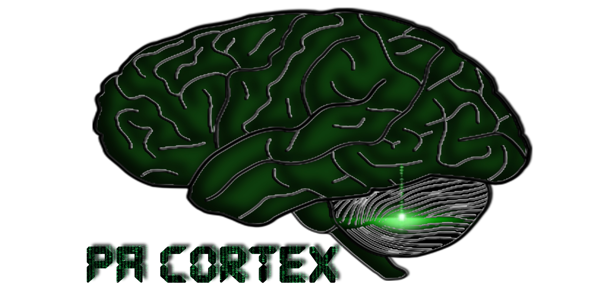

A Full-Stack Web Developer conducting research on all things World Wide Web, both technical and fundamental. Presents to you, an environment of rich and practical Simon Says information to better understand and take advantage of all things World Wide Web.

Quite agile, both in the way we conduct business, do research, and gather resources while serving with honor, advocacy, and the most attentive integrity and creativity.
Operating as the most credible and reliable client-oriented company on the Internet.
A virtual service-oriented IT company that provides a range of services that helps with establishing and fueling Web Presence. Has been successfully conducting business with small and medium-size companies, high profile clients, bands, and freelance developers and bloggers. Offers Web Hosting services, develops Web and Native Applications, and Digital Marketing Strategies.